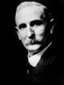

FORMER JUDGES
Judge Edward Webster Felt
Edward Felt was born in Alleghany County, Virginia on November 7, 1859. He grew
up in Hancock County, Indiana and graduated from the Central Normal School in
Danville in 1884. He taught school for a year in Greenfield.
In 1885 Judge Felt married Martha Thomas and began law studies in the office of
James A. New in Greenfield. He was admitted to practice in the Hancock Circuit
Court in 1887, and joined Mr. New as a partner.
A Democrat, Judge Felt was elected prosecuting attorney for the 18th Judicial Circuit
In 1890 and 1892 In 1896. He was appointed Hancock County Attorney, then elected
Judge of Hancock Circuit Court in 1900. He first ran for the Indiana Appellate Court
in 1906 but was defeated. In 1910 he was elected, and served on the court from
January 1, 1911 to January 1, 1919. On January 13, 1913, he administered the oath
Of office to indiana’s 28th governor, Samuel Raiston, an old friend from the Central
Normal School in Danville.
up in Hancock County, Indiana and graduated from the Central Normal School in
Danville in 1884. He taught school for a year in Greenfield.
In 1885 Judge Felt married Martha Thomas and began law studies in the office of
James A. New in Greenfield. He was admitted to practice in the Hancock Circuit
Court in 1887, and joined Mr. New as a partner.
A Democrat, Judge Felt was elected prosecuting attorney for the 18th Judicial Circuit
In 1890 and 1892 In 1896. He was appointed Hancock County Attorney, then elected
Judge of Hancock Circuit Court in 1900. He first ran for the Indiana Appellate Court
in 1906 but was defeated. In 1910 he was elected, and served on the court from
January 1, 1911 to January 1, 1919. On January 13, 1913, he administered the oath
Of office to indiana’s 28th governor, Samuel Raiston, an old friend from the Central
Normal School in Danville.
